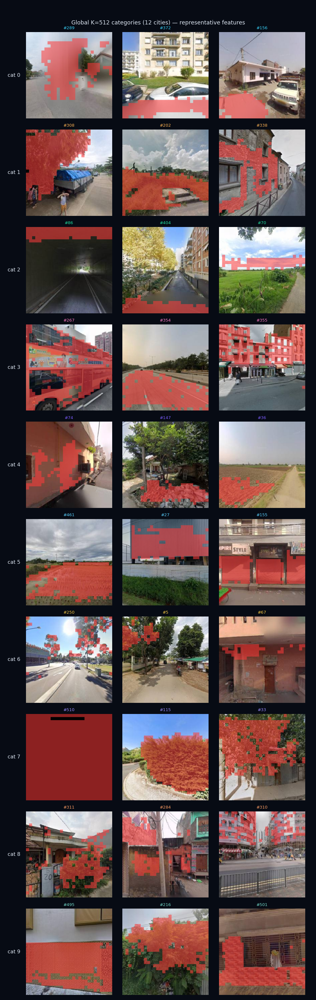

Break down the street view intoVisual Genes
and locate back the image
in DINOv3patch levelTrain one on the featuresTop-K sparse autoencoder,
Unpacking entangled visual representations into a set of univocal dimensions ("visual genes"). Activation natural zone position in each dimension——
After upsampling and stacking it back to the original image, you can see exactly what it corresponds to in the street view.Which piece:
Vehicles, curbs, green belts, building facades, skylines...the entire process does not require any semantic segmentation annotation.
0.892
Reconstruct cos (K=512)
512
Dictionary dimension K
12
Shared dictionary city number
activation strengthlow → high

① DINOv3Street View 448² → ViT-L/16, strip off the CLS/register prefix, retain 28×28=784 patch features (1024 dimensions each)
→
② Top-K SAEEach patch retains only the strongest 32 activations, L0 pinned to exactly 32, dictionary K=512, zero dead atoms
→
③ Activation mapTake the activation of a certain gene on 784 patches and reshape it back to a 28×28 grid.
→
④ Stack back to the original imageUpsampled to 448², superimposed - the physical meaning of the features is clear at a glance
Visual Gene Map · K=512 Global 12-City Dictionary
Global dictionary trained onHong Kong · Singapore · Amsterdam · Cape Town · Paris · Sao Paulo · Mexico City · Sydney · Jakarta · Dhaka · New Delhi · Manila(6 continents, 12 cities, 11.52 million patches @448; image quality filtering has been used to remove black/mushy/tunnel images and then retrained). Put the 512 genes according to their location in global3Genealogical structure + semanticsattributed to5 categories;
Each row is the location of a representative gene of a category on the real street scene (red area = patch lit by this gene). The categories are manually summarized afterwards and do not participate in training - the street scenes are mainly facades/pavements, so these two categories are relatively large.
Debiasing training.To make this "shared dictionary" fair and non-urban biased: ①Equivalent per citySampling (not proportional to city size, otherwise large cities dominate);
② Inside the cityStratified by road network/sampling point density(Suppress the over-mining of GSV on the main road); ③ Each pano’sAll 4 orientationsAll enter training (direction is unbiased);
④ Fixed DINOv3boundary artifact(directional projection culling) and a directory casing bug (which silently missed about 79% of panos).
result:0 dead atoms, 12 cities are strictly equal. The only remaining data source bias (GSV itself is biased towards developed cities/main roads) cannot be eliminated from the sampling side and must be stated in the conclusion.
Vegetation · 78
Building facade · 241
Pavement · Road · 164
Vehicles · 19
Sky·Vision · 10
Visual gene genealogy · K=512
Each gene in DINOv3 space is adirection vector(decoder atom).
Perform hierarchical clustering on these directions according to cosine distance to getVisual gene genealogy tree——The closer the direction, the more relevant the encoded concept is.
The figure below shows the pedigree of the 44 most frequently occurring genes among the 512 genes (completely data-driven, no manual classification).
Dictionary global3: 12-city global version (6 continents / 448² / K=512, L0=32, 11.52 million patches, zero dead atoms, rebuild cos 0.892).DINOv3 ViT-L/16 @448 (28×28=784 patches), debiased and shared Top-K SAE.
Methodological points: Use Top-K hard constraints for sparseness (soft L1 will degenerate into dense activation); in training lossNoPut the spatial smoothing term,
So that "spatial coherence + cross-city transferability" can be used as independent evidence of fidelity; boundary artifacts are removed from the root with directional projection.Image quality filter: Use a 4-category small CNN (good/dark/blur/tunnel, tunnels are manually annotated + CLIP distillation) to eliminate black/blur/tunnel images on the full 13.94 million pano, and then use clean samples to retrain the dictionary.
Classified into global3 native 5 categories (lineage clustering + semantics, Sky is data-driven). "Street Browser" is a city-level application (street segment analysis is done in 4 cities with road network data; the remaining cities have been included in the dictionary).